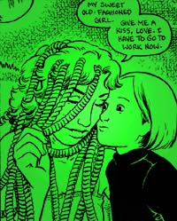

CAPTION 2003 took place on Saturday and Sunday 2-3 August 2003, in the Oxford Union Society, St Michael's Street, Oxford, England.
Photos
Jenni Scott, plus those in her reports
Reports
 Beware the Hair
(Jeremy Dennis's Weekly Strip)
Beware the Hair
(Jeremy Dennis's Weekly Strip)
Jenni Scott: Friday, Saturday, Saturday evening, and Sunday; Gideon's panel on Scrolling Comics
Dave Goodman (Bahala-Na, Zip Gun Presents)]
cyberCAPTION: It’s the end of the world as you know it, but I feel fine. (Teacake in Silver Bullet Comics small-press area)
About
CAPTION is a comics festival/convention run annually in Oxford.
You can join CAPTION in advance by printing out
the application form, filling it in, and posting it to us.
(Membership on the door will cost slightly more.)
Visit
the CAPTION community on LiveJournal
to read more about CAPTION and
alternative/small-press comics.
If you have questions, send
mail to caption2003@caption.org or
post a letter to CAPTION 2003, 18 Hawkins Street, Oxford OX4 1YD.
Join the CAPTION mailing list to keep up to date.
The CAPTION web site has archived information about past CAPTION conventions as long ago as the twentieth century.